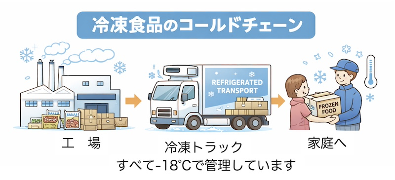

公開日：2026年5月｜最終更新：2026年5月
高齢者では、食事量の減少により「たんぱく質や野菜が不足しやすい」ことが知られています。調理の負担を減らしながら栄養を確保する方法として、冷凍食品を上手に利用することは有効です。
現在の冷凍食品は品質も向上しており、日常の食事を支える食品として活用できます。
冷凍食品は、忙しい人だけではなく、「高齢者の食事を支える便利な食品」としても注目されています。
ここでは、栄養面から見て「家庭に常備しておくと便利な冷凍食品」を紹介します。
高齢者では魚を食べる量が減りやすいと言われています。
魚には
が含まれています。
焼き魚の冷凍食品を利用すれば、「電子レンジで簡単に主菜を準備」できます。サバやサケなどは栄養価も高くおすすめです。
ブロッコリーは
を多く含む野菜です。
冷凍ブロッコリーは必要な量だけ使えるため、「一人暮らしでも野菜を無駄にせず利用できます。」電子レンジで温めるだけで副菜になります。
枝豆は、「畑の肉」とも呼ばれる食品で
を含んでいます。
調理が簡単で、「たんぱく質を補う副菜」として便利な食品です。
肉料理は高齢者のたんぱく質補給に重要ですが、調理が負担になることもあります。
冷凍ハンバーグは
という利点があります。
最近は塩分を抑えた製品もあり、「たんぱく質摂取を補う食品」として役立ちます。
主食としておすすめなのが冷凍うどんです。
冷凍うどんは
という特徴があります。
ここに
などを加えることで、「簡単に栄養バランスの良い食事」になります。
冷凍食品は、「主菜や野菜を補う食品」として利用することが大切です。
「主食・主菜・野菜を組み合わせることで、栄養バランスが整いやすくなります」
例えば次のような組み合わせです。
例
このようにするだけでも、食事の栄養バランスは大きく改善します。
高齢者では、食事量の減少により低栄養が起こりやすくなります。
その対策として、冷凍食品は「手軽に栄養を補うための有用な食品」と言えます。
無理に毎日調理を頑張るよりも、冷凍食品を上手に利用して、「安定して食事をとることが健康維持につながります。」
日本では、「日本冷凍食品協会」が独自の品質制度を運用しています。
などの基準を満たしていることを示す「信頼マーク」です。
①認定マーク（上述）
②大手メーカー
などは品質管理が非常に厳しい企業です。
③原材料表示 栄養の観点では、「たんぱく質量」「塩分量」を見ると良いです。
特に高齢者では、「たんぱく質10g以上／1食」くらいを目安にすると良いと言われています。
日本の冷凍食品は、世界的にも「かなり安全性の高い食品カテゴリー」とされています。
その理由は、「低温保存」「細菌増殖が起こりにくい」「HACCP管理」「コールドチェーン（低温輸送）」などの仕組みが整っているためです。

表示されている調理方法を確認し、十分に加熱して食べましょう。
参考文献
※本ページは公的機関および学会の情報をもとに作成しています。